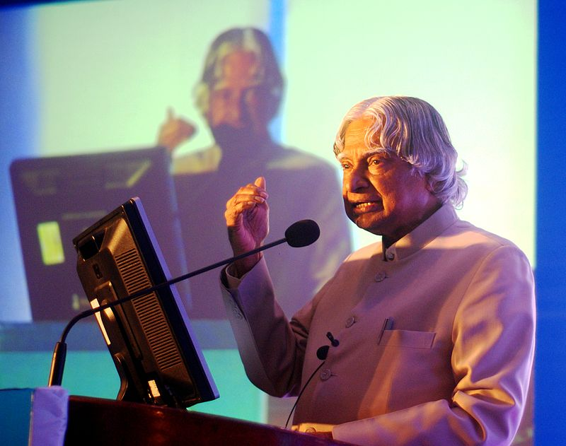

AWARDS AND HONOURS
Further information: List of things named after A. P. J. Abdul Kalam Kalam received 7 honorary doctorates from 40 universities.The Government of India honoured him with the Padma Bhushan in 1981 and the Padma Vibhushan in 1990 for his work with ISRO and DRDO and his role as a scientific advisor to the Government.In 1997, Kalam received India's highest civilian honour, the Bharat Ratna, for his contribution to the scientific research and modernisation of defence technology in India. In 2013, he was the recipient of the Von Braun Award from the National Space Society "to recognize excellence in the management and leadership of a space-related project". In 2012, Kalam was ranked number 2 in Outlook India's poll of the Greatest Indian.
Following his death, Kalam received numerous tributes. The Tamil Nadu state government announced that his birthday, 15 October, would be observed across the state as "Youth Renaissance Day;" the state government further instituted the "Dr. A. P. J. Abdul Kalam Award", constituting an 8-gram gold medal, a certificate and ₹500,000 (US$7,000). The award will be awarded annually on Independence Day, beginning in 2015, to residents of the state with achievements in promoting scientific growth, the humanities or the welfare of students. On the anniversary of Kalam's birth in 2015 the CBSE set topics on his name in the CBSE expression series. Prime Minister Narendra Modi ceremonially released postage stamps commemorating Kalam at DRDO Bhawan in New Delhi on 15 October 2015, the 84th anniversary of Kalam's birth. Researchers at the NASA's Jet Propulsion Laboratory (JPL) had discovered a new bacterium on the filters of the International Space Station (ISS) and named it Solibacillus kalamii to honour the late president Dr. A. P. J. Abdul Kalam. Several educational and scientific institutions and other locations were renamed or named in honour of Kalam following his death.
 s- Kerala Technological University, headquartered at Thiruvananthapuram where Kalam lived for years, was renamed to A P J Abdul Kalam Technological University after his death.
- An agricultural college at Kishanganj, Bihar, was renamed the "Dr. Kalam Agricultural College, Kishanganj" by the Bihar state government on the day of Kalam's funeral. The state government also announced it would name a proposed science city after Kalam.
- India's First Medical Tech Institute named as Kalam Institute of Health Technology located at Visakhapatnam.
- Uttar Pradesh Technical University (UPTU) was renamed A. P. J. Abdul Kalam Technical University by the Uttar Pradesh state government.
- A. P. J. Abdul Kalam Memorial Travancore Institute of Digestive Diseases, a new research institute in Kollam city, Kerala attached to the Travancore Medical College Hospital.
- A new academic complex at Mahatma Gandhi University in Kerala.
- Construction of Dr. A. P. J. Abdul Kalam Science City started in Patna in February 2019.
- A new science centre and planetarium in Lawspet, Puducherry.
- India and the US have launched the Fulbright-Kalam Climate Fellowship in September 2014. The first call for applicants was announced on Friday, 12 March 2016, for the fellowship which will enable up to 6 Indian PhD students and post-doctoral researchers to work with US host institutions for a period of 6–12 months. The fellowship will be operated by the binational US-India Educational Foundation (USIEF) under the Fulbright programme.
- Dr APJ Abdul Kalam Planetarium in Burla, Sambalpur, Odisha was named after him.
Island
Wheeler Island, a national missile test site in Odisha, was renamed Abdul Kalam Island in September 2015.
Road
A prominent road in New Delhi was renamed from Aurangzeb Road to Dr APJ Abdul Kalam Road in August 2015.
Plant species
In February 2018, scientists from the Botanical Survey of India named a newly found plant species as Drypetes kalamii, in his honour.
| Year of award or honour | Name of award or honour | Awarding organisation |
|---|---|---|
| 2014 | Honorary professor | Beijing University, China |
| 2014 | Doctor of Science | Edinburgh University, UK |
| 2013 | Von Braun Award National | Space Society |
| 2012 | Doctor of Laws (Honoris Causa) | Simon Fraser University |
| 2011 | IEEE Honorary Membership | IEEE |
| 2010 | Doctor of Engineering | University of Waterloo 2009 Honorary Doctorate Oakland University |
| 2009 | Hoover Medal | ASME Foundation, USA |
| 2009 | International von Kármán Wings Award | California Institute of Technology, USA. |
| 2008 | Doctor of Engineering (Honoris Causa) | Nanyang Technological University, Singapore. |
| 2008 | Doctor of Science (Honoris Causa) | Aligarh Muslim University, Aligarh. |
| 2007 | Honorary Doctorate of Science and Technology | Carnegie Mellon University. |
| 2007 | King Charles II Medal | Royal Society, UK |
| 2007 | Honorary Doctorate of Science | University of Wolverhampton, UK |
| 2000 | Ramanujan Award Alwars Research Centre, | Chennai. |
| 1998 | Veer Savarkar Award | Government of India |
| 1997 | Indira Gandhi Award for National Integration | Indian National Congress |
| 1997 | Bharat Ratna | President of India. |
| 1995 | Honorary Fellow | National Academy of Medical Sciences, |
| 1994 | Distinguished Fellow | Institute of Directors (India) |
| 1990 | Padma Vibhushan | Government of India |
| 1981 | Padma Bhushan | Government of India |
| 1981 | Padma Bhushan | Government of India |